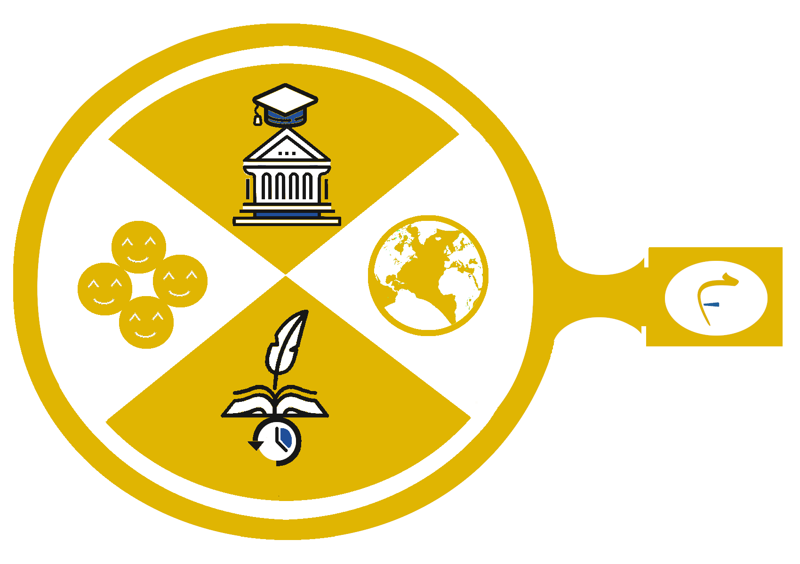
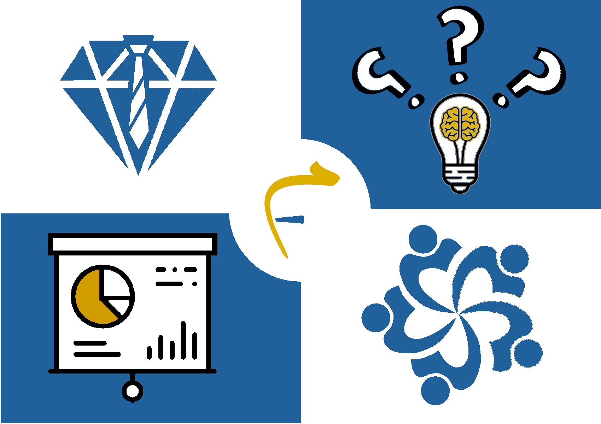
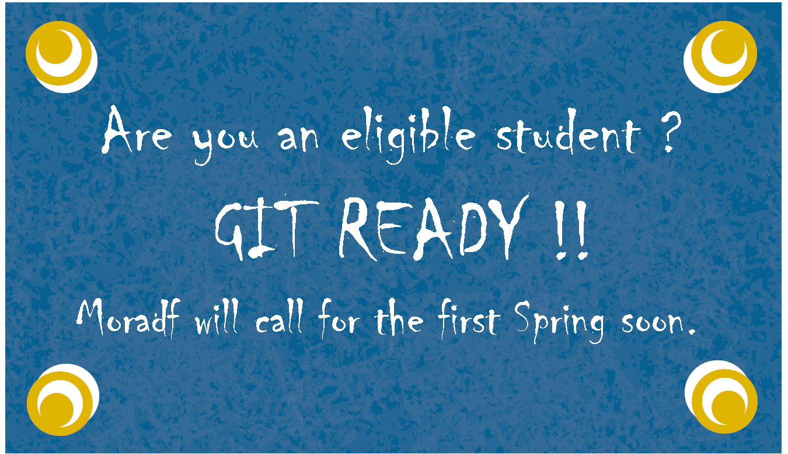
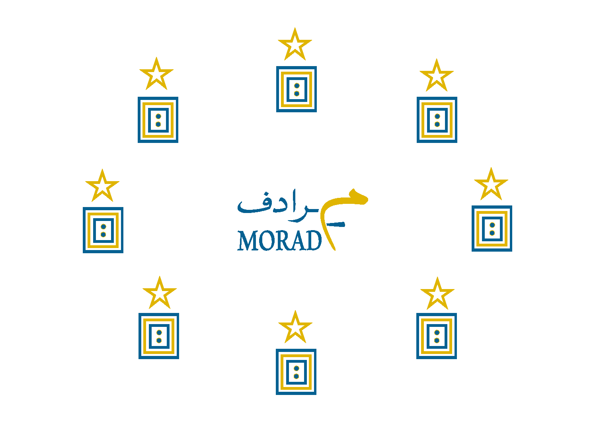

Moradf is a unique extracurricular experience for high school students.The training program engages the students within a fruitful atmosphere, where they gain valuable knowledge while they are discovering diverse spots through Moradf Lens. The program activities designed to encourage the students to optimize their abilities and develop Moradf Skills, that used to be fundamental skills for success.
MORADF LENS

Moradf lens represents the value of discovering, as a source of valuable knowledge.
Hence, Moradf initiates to support the students to make a right decision for their
future at the university.
Simply, Moradf fills the gab of awareness that usually hinder the students' success,
through providing a reliable channel for them to create an adequate knowledge about the university majors.
The other half of the lens power makes Moradf such a matchless experience, for it’s
designed precisely to focus on three diverse significant spots:
- Discover the main different colors of human character in the practical life. The spot gives the students knowledge to determine their/others position on the working team and space.
- Discover some light sights in history by focusing on the history makers from different ages and backgrounds. The spot gives the students historical knowledge as well as a great motive for starting a marvelous change.
- Discover different borders on the planet, looking at some of the characteristic norms and main life perspectives. The spot gives the students knowledge about different cultures and broaden their world view for better understanding.
MORADF SKILLS

Knowledge is important, but without suitable and effective skills we cannot make a real action. Hence, Moradf initiates to develop the necessary skills, encourage the students to strengthen their capabilities,
and motivate them to acquire new competences.
Moradf is based on the concept of inclusive communication that gives every student a chance to share and
develop with others in a respectable and safe atmosphere.
The creative activities of Moradf enhance the effective engagement during the program, create
positive and spirit environment, and utilize the students' energy for a remarkable development.
At the end of Moradf Spring, the graduated students will be able to use different presentation tools and
techniques which are needful for both curricular and extracurricular assignments, tasks, and projects.
In addition, they will get adapted to work together within teams, to learn the teamwork ethics and develop teamwork skills.
Moreover, the evaluation criteria and constructive feedback’s procedure will improve
the decision-making abilities of students.
Ultimately, Moradf prepares its participants with effectual leadership qualities that give them confidence
to lead a change and begin their success stories.
OUR STUDENTS
The optimum value of Moradf is obtained by the students who match to the eligibility criteria of the program.
Eligible requirements:
- Students in the second year in high school / 11th Grade “Junior Year”.
- Students who can access to the internet through a personal computer.
(~ 6 hours\week, for 4 weeks) - Students who are committed to the program duties and schedule.
- Students who are passionate to enrich their life and develop themselves.
- Students who seek to be involved in a positive community with like-minded mates.
MORADF SPRINGS

OUR TEAM
"Join Our Enthusiastic Team"
The application will be announced on our social platforms in few days. Stand by!!